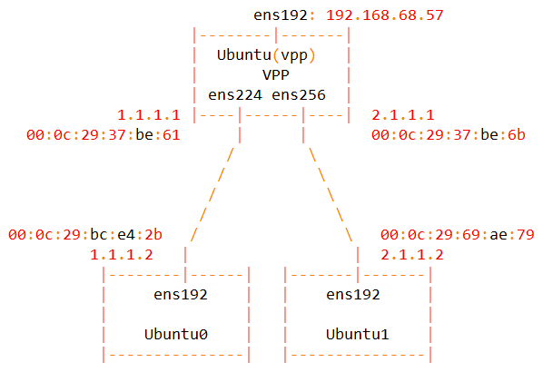
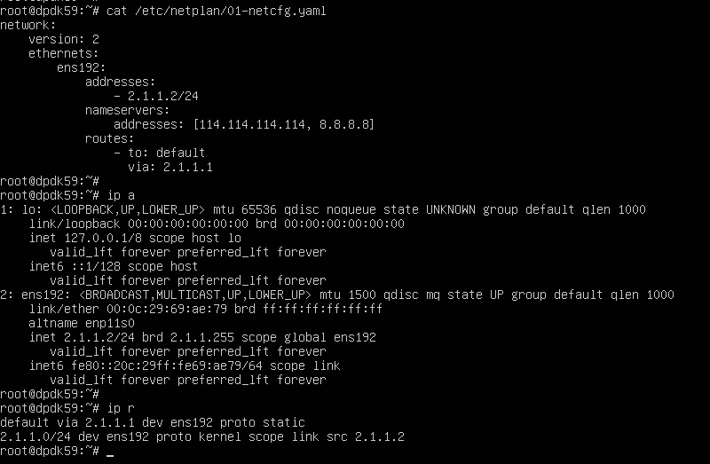
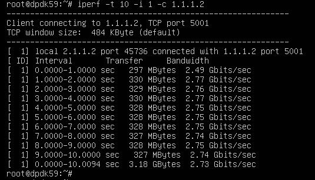

0. vpp-u2204
date: 2023-02-04
https://wiki.fd.io/view/VPP/Progressive_VPP_Tutorial
https://s3-docs.fd.io/vpp/22.10/
vpp u2204 vmware : 网卡均为vmxnet3

 https://packagecloud.io/fdio
https://packagecloud.io/fdio


apt install driverctl
driverctl list-devices | grep vmxnet3
0000:0b:00.0 vmxnet3
0000:13:00.0 vmxnet3
0000:1b:00.0 vmxnet3
driverctl set-override 0000:13:00.0 vfio-pci # 重启后仍然绑定
driverctl unset-override 0000:13:00.0 # 解除绑定
dpdk-devbind.py -b vfio-pci 0000:13:00.0 # 重启后解除绑定
apt install dpdk dpdk-dev -y
## 22.10
curl -s https://packagecloud.io/install/repositories/fdio/release/script.deb.sh | sudo bash -vx
cat /etc/apt/sources.list.d/fdio_release.list
apt-get update
apt-get install vpp vpp-plugin-core vpp-plugin-dpdk
# apt-get install vpp-api-python python3-vpp-api vpp-dbg vpp-dev
# Uninstall the Packages
# apt-get remove --purge vpp*
# systemctl enable vpp
systemctl status vpp
vi /lib/systemd/system/vpp.service
ExecStartPre=-/sbin/modprobe vfio-pci
vi /etc/vpp/startup.conf
dpdk {
uio-driver vfio-pci
dev 0000:13:00.0
dev 0000:1b:00.0
}
systemctl daemon-reload && systemctl restart vpp && systemctl status vpp
vppctl show ver
vppctl
提示符：
vpp#
set interface state GigabitEthernet13/0/0 up
set interface state GigabitEthernet1b/0/0 up
set interface ip address GigabitEthernet13/0/0 1.1.1.1/24
set interface ip address GigabitEthernet1b/0/0 2.1.1.1/24
show interface


ubuntu0:

ubuntu1:

ubuntu0 与 ubuntu1 可以互相ping通。


ubuntu0:
iperf -s -i 1
ubuntu1:
iperf -t 10 -i 1 -c 1.1.1.2

dpdk有2-3G，网卡是10G
不用dpdk，重启后：
ip l s ens224 up
ip l s ens256 up
ip a a 1.1.1.1/24 dev ens224
ip a a 2.1.1.1/24 dev ens256
路由方式1G，这个对的。

clean:
ip a flush ens224
ip a flush ens256
ip l s ens224 down
ip l s ens256 down